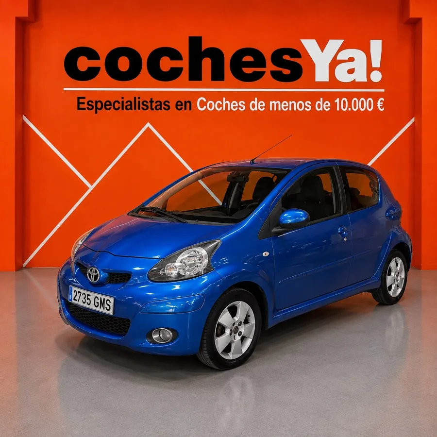
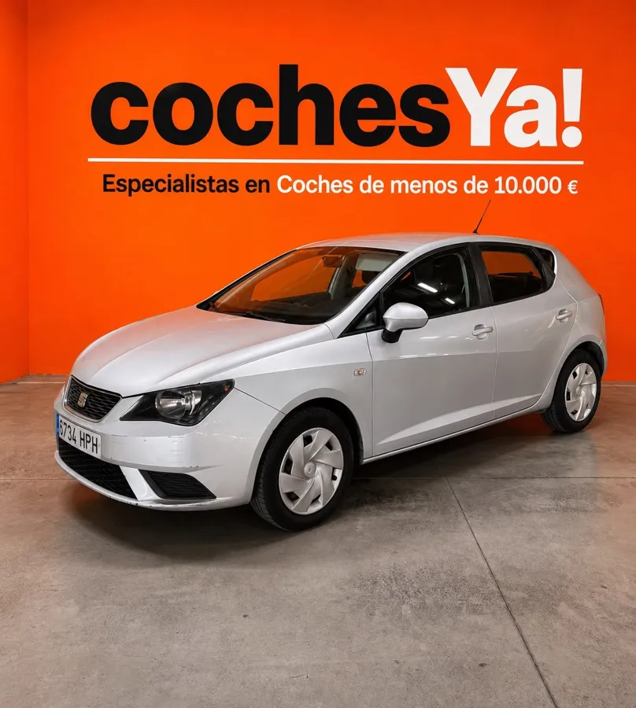
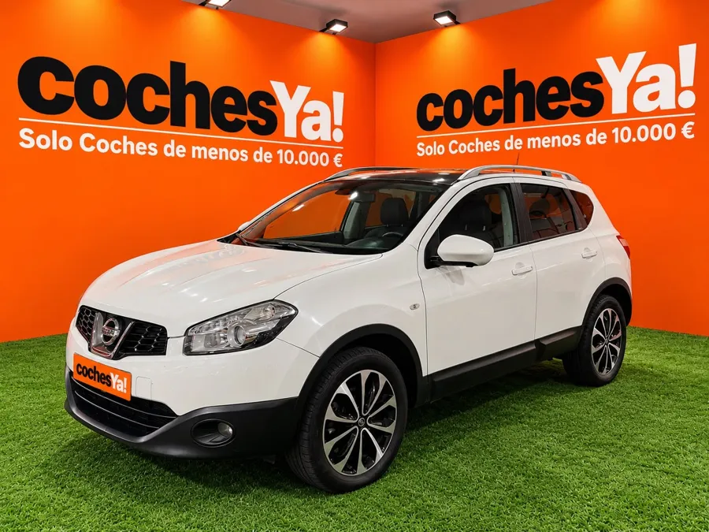
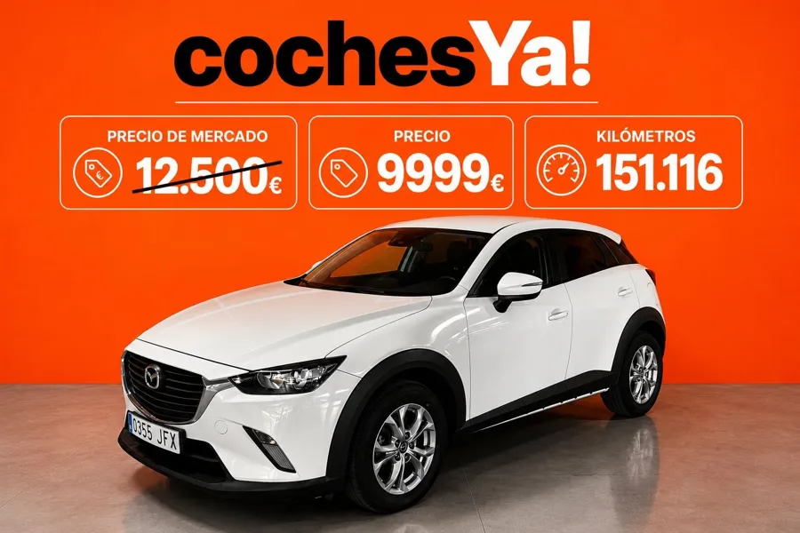

Alguien entra en vuestra web y escribe «busco mi primer coche, tengo unos 6.000 €». Lola le contesta al momento como lo haría alguien de vuestro equipo: le pregunta lo justo y le propone coches de vuestro stock con año, kilómetros, precio y el porqué. También atiende la financiación, el coche a cambio, los envíos a otra ciudad, la reserva y las videollamadas, y os pasa a quien de verdad quiere comprar con su nombre, su teléfono y el coche que le interesa.
Pulsad una pregunta y Lola la contesta en el chat. Los coches, precios y condiciones son los vuestros; las reservas son de ejemplo.
Pregunta lo que falta (presupuesto y para qué lo quiere) y propone dos o tres coches de vuestro stock, con el porqué de cada uno.
Cuenta el equipamiento, los kilómetros y la garantía de ese coche, solo con lo que pone vuestra ficha, y le deja el enlace a las fotos.
Confirma que enviáis a toda España, recuerda los 200 € del cambio de nombre y pide la ciudad para que le paséis el precio del transporte.
No se inventa cuotas: explica cómo funciona, pide nombre y teléfono y os lo pasa con el coche que quiere.
Recoge marca, modelo, año y kilómetros y un teléfono para que lo valoréis vosotros.
Vuestros precios no se negocian. Lo explica con buenas maneras y ofrece lo que sí puede: financiación, coche a cambio o garantía ampliada.
Si no hay ese coche, propone el más parecido y toma nota para avisarle. Si preguntan algo que la ficha no dice, no se lo inventa.
Con el número de reserva, cuenta en qué punto va el transporte y cuándo llega.
Ejemplo con una reserva de la muestra.
Pago recibido, coche revisado, coche en camino: el cliente se entera por vosotros y no tiene que llamar para preguntar. En esta muestra el mensaje es de ejemplo y no se envía a nadie.
Datos y fotos de vuestra web. Cada tarjeta abre la ficha en cochesya.net.




Los datos son vuestros, leídos de cochesya.net el 27 de octubre de 2026: los 20 coches de la web con precio, año, kilómetros, potencia y la descripción de cada uno, vuestra garantía de 1 año y las ampliaciones de Garantía Global, la reserva con 200 €, el coste del cambio de nombre, la financiación, el coche a cambio, los envíos a toda España y vuestra dirección y horario de Dos Hermanas.